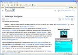
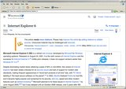
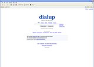
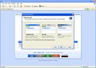

Dialup is a fast, free web browser for your Mac. Open your favorite sites in tabs, leave the ads behind, and dress the whole browser in the skin you like best. It runs on the same engine as Safari, so the Web just works, and it keeps itself up to date.

Dialup with the Luna skin and two tabs open. Click to enlarge.
How to install
Getting Dialup takes about a minute. Pick the way you like.
1 The one-liner (easiest)
Open Terminal, paste this line and press Return. Dialup lands in your Applications folder and opens, ready to go.
curl -fsSL https://raw.githubusercontent.com/viktorfroberg/Dialup/main/install.sh | sh
Careful people read a script before running it: read install.sh first.
2 Download the zip
- Download Dialup.zip and unzip it.
- Drag Dialup.app to your Applications folder.
- Open it. The first time, macOS blocks it, because Dialup isn't notarized by Apple.
- Go to System Settings → Privacy & Security, scroll down and click Open Anyway.
Always up to date. Dialup checks for new versions when it starts, and Help → Check for Updates… checks right away. Updates download and install in a minute, no warnings, no fuss.
Features
- Tabbed browsing. Open several pages in one window and flip between them with a click. Prefer a window for every page? That works too; the Setup Wizard asks.
- Skins. Pick Luna, Aqua or Classic and the whole browser changes with it, title bar, buttons, menus and all. A skin is a single CSS file, so you can make your own.
- Ad and tracker blocking. On from the start, so pages load faster and stay tidy.
- Dial-up Mode ⇧⌘D. See the Web the way 56k visitors do: pictures arrive one by one while the status bar counts down “(3 items remaining)”. Switch to 256 colours to see how your graphics hold up.
- Search from anywhere. Type words in the Address bar or use Dialup's own start page, with DuckDuckGo, Google, Bing or Wikipedia.
- Wayback button. Wonder what a site looked like a few years ago? One click asks the Internet Archive.
- Favorites menu, a Links bar and ⌘D. Bring your bookmarks along from any other browser.
- Secure browsing. A padlock in the status bar when a site is secure, with the certificate one double-click away.
- Make it yours. Text size, sounds, where downloads go and more, all in Dialup Options.
Screenshots
Click a picture to see it full size.


LunaBlue and friendly
 Aqua
AquaBrushed metal


ClassicGrey and dependable
 Dial-up Mode
Dial-up ModePictures at 56k speed
 Hard mode
Hard mode216 dithered colours


Start pageSearch and your favorites
 Dialup Options
Dialup OptionsWith live previews


Setup WizardOn first run
 Start page, Aqua
Start page, AquaIt matches each skin
What's New
The first version of Dialup.
- Tabbed browsing, or one window per page if you prefer.
- Three skins: Luna, Aqua and Classic. Dialup's icon changes with them.
- Dial-up Mode, with 256-colour and web-safe colour settings.
- Dialup's own start page, with search, your favorites and a site of the day.
- Ad and tracker blocking, Favorites and a Links bar, and the Wayback button.
The full list is in the changelog.
Links
| Source code | github.com/viktorfroberg/Dialup Build it yourself with Xcode. Instructions in the README. |
| All releases | Releases page |
| Report a bug | Issues on GitHub Found something broken? Please tell us. |
| License | MIT. Use it, fork it, reskin it. |